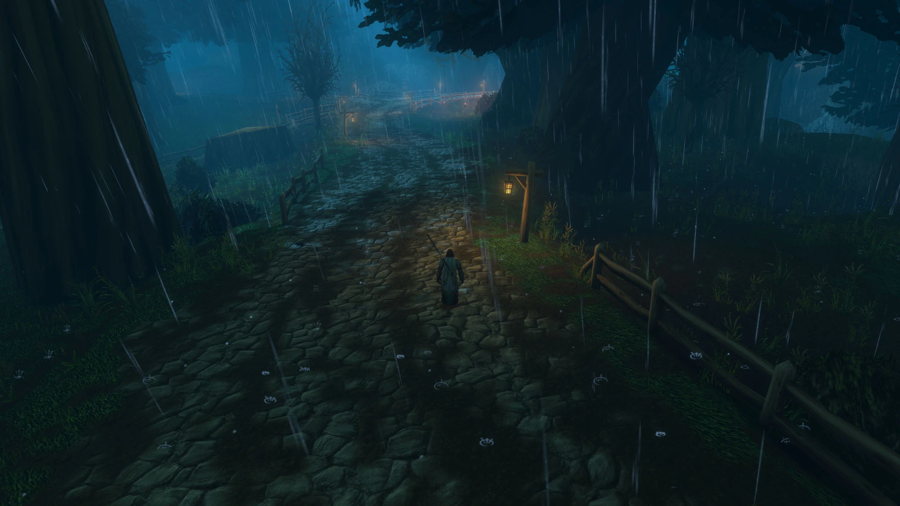
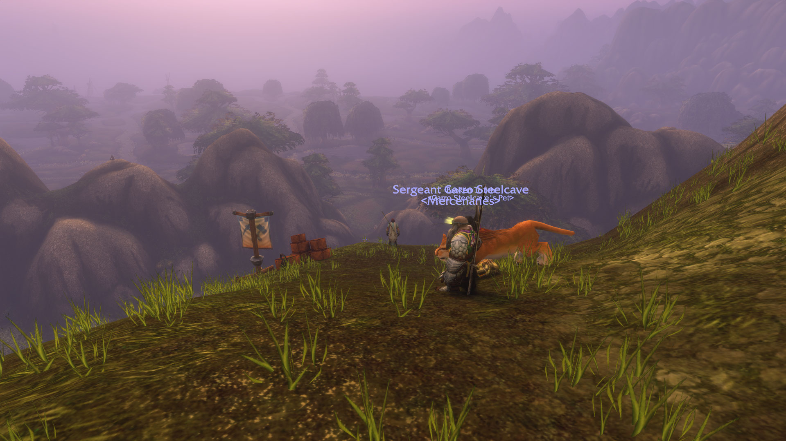
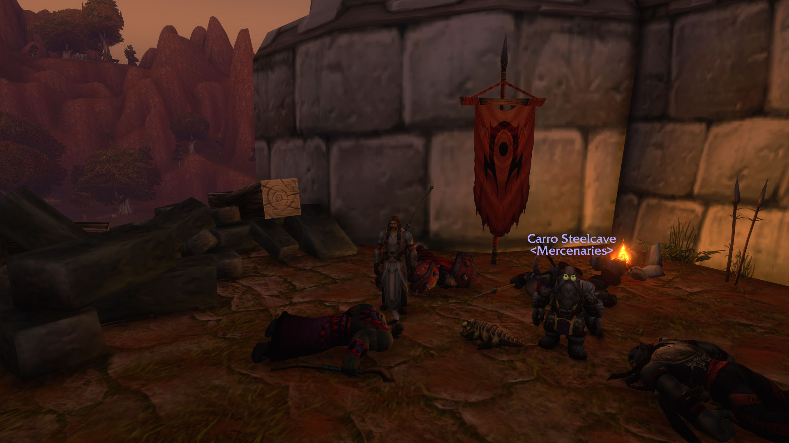

The Living Chronicle
Not a race to the finish. An evolving record of three travellers — levels, exploration, quests and the quiet moments that become stories. Profile statistics use available progress feeds; the timeline also includes the recorded days from the Travel Journal.
28 NOVEMBER 2026 · DUSKWOOD · LEVEL 26 (PLAYER CONFIRMED)
Where the Rain Keeps Watch
Under the rain and the last lights of Duskwood, Xuthar continues his journey. Five newly recorded completions since 25 November bring the official quest record to 264 completed IDs and 17 active: Ghost Hair Thread (#149), Return the Comb (#154), Deliver the Thread (#157), Zombie Juice (#158) and Return to Jitters (#240). These were first observed complete on 26 November at 03:53 Italy; their exact hand-in times are unknown.
The 28 November 03:43 Italy official check still reports level 25; the player's later level 26 report is shown separately. Gather Rot Blossoms (#156) is newly active. No additional completions are inferred from the level-up.

25 NOVEMBER 2026 · OFFICIAL PROFILE REVIEW · LEVEL 25
Echoes of the Excavation
Two forgotten threads of the Wetlands expedition are now recorded: Songblade Search (#95772) and Lost Relic Carry (#95810), first observed complete on 23 November at 01:55 Italian time. The 25 November 18:59 official profile confirms level 25, 259 completed quest IDs and 18 active. No further completions were observed today.
Prehistoric Prism, Fallen in the Fen and Craftsman’s Writ: Dark Leather Tunic remain active. Current location and online status are unconfirmed.
23 NOVEMBER 2026 · A DAY OF REST
The Quiet Between the Roads
After the adventures of recent days, Xuthar lets the road wait. Today is for rest, memories of Carro and the Wetlands, and thoughts of the Azeroth still ahead.

22 NOVEMBER 2026 · NEW DUNGEON CHRONICLE
Excavation Site conquered.
Two friends. A mountain of memories.
Saltspine, Shadetooth and the Relic Guardian fall before Xuthar and Carro. Follow the hidden valley, the burning camp and the fossil cliffs in eleven new novel chapters and 22 original Full HD photographs.
22 NOVEMBER 2026 · DUSKWOOD · LEVEL 25
The Roads Beyond Darkshire
Raven Hill’s history is recovered, Abercrombie is found, supplies reach Sven and the kitchen work in Darkshire is finished. Nine new completions since arrival bring Xuthar to 257 completed quest IDs, with 16 active. The remaining journeys lead toward Blind Mary, Ira’s unfinished duty and Sven’s buried clue.
The completion interval spans late 21 November and 22 November. Ten Duskwood commissions remain active; exact hand-in times and objective counters are unavailable.
21 NOVEMBER 2026 · DUSKWOOD · THE ADVENTURE BEGINS
Where the Lanterns Hold
Xuthar Morvayne arrives in Darkshire. Yesterday he carried an appeal to a town that could not spare its Night Watch; today, in the living novel, he returns to offer his own help. Althea’s cemetery patrol, the first thread of Stalvan’s mystery and the forgotten history of the Valor family open a new chapter.
Blizzard confirms the introductory The Legend of Stalvan (#66) complete. The next stage, #67, is active. The eleven new commissions remain in progress.
20 NOVEMBER 2026 · XUTHAR & CARRO · PLAYER-CONFIRMED VICTORY
Stonewatch Triumph · The Blackrock Fall
Xuthar confirms the difficult quests Shadow Magic (#115) and Tharil'zun (#19) complete. Three Midnight Orbs were recovered and the Blackrock commander was defeated. Seven original Full HD photographs preserve the climb, the reunion with Carro on the bridge, the Blackrock courtyard's defeat, and a joyful celebration beside a Lakeshire bonfire with friends. Blizzard officially confirmed both quests at 22:01 Italian time: level 24, 247 completed quest IDs, six active quests.

Travel Journal → · Novel Chapters 163–170 → · Seven Full HD photographs →
20 NOVEMBER 2026 · EARLIER THAT EVENING · EXPEDITION PRELUDE
Stonewatch Waits · The Orbs and the Orc
Xuthar has announced his intention to tackle two difficult Redridge quests: Shadow Magic (#115, recover three Midnight Orbs from Blackrock Shadowcasters) and Tharil'zun (#19, defeat the commander of the Blackrock Outrunners). Both were active in the earlier Blizzard snapshot when this expedition was announced. Xuthar later confirmed both missions completed; see the triumph recorded above.
Tonight's Travel Journal → · Book Prelude · Chapters 160–162 → · Mission objectives →
20 NOVEMBER 2026 · VERIFIED +2 COMPLETIONS · LEVEL 24
Two Towns. No Army.
Blizzard confirms two newly completed quest IDs in the Messenger to Darkshire chain: #145, Solomon's appeal to Lord Ebonlocke, and #146, Ebonlocke's written refusal returned to Lakeshire. The Night Watch cannot abandon Darkshire. The earlier 20:21 snapshot had 245 completed quest IDs and eight active; the later official 22:01 sync verifies the two Stonewatch quests too, bringing the total to 247 completed and six active, level 24. This is a completed chain of messages, not a claim of new battles or rewards.
Travel Journal → · The Last Witness · Chapters 154–159 → · Two verified quests →
LATEST JOURNAL · 19 NOVEMBER 2026 · NO ADVENTURE
A Day Without Swords
Exhaustion and old wounds keep Xuthar beside the Lakeshire fire. He reads histories of the Kaldorei, Tirisfal’s Guardians and the Emerald Dream, while Carro Steelcave searches Maraudon for the Blade of Eternal Darkness. Xuthar remains level 24. The quest search is ongoing, not a confirmed weapon drop.
The three adventurers
Profiles from the available progress feedThe road remembers
Recent journeys · Travel Journal & synced milestonesHow the chronicle comes to life
The read-only Blizzard Forever EU character Profile API is active for Xuthar Morvayne. GitHub Actions publishes verified public profile snapshots to the live-blizzard branch. The verified 28 November 2026 03:43 Italy snapshot confirms level 25, 17 in-progress quests and 264 completed quest IDs. The player subsequently reports level 26. Five Duskwood completions were first observed on 26 November. Live feed data takes precedence for official values if updated later.
No retail or Classic character profiles are substituted for Forever. Fields that the official API does not expose remain unavailable, not zero. Personal narrative entries will remain separate from verified game statistics.
Official Blizzard API integration and privacy ↗ · Meet our Forever characters ↗